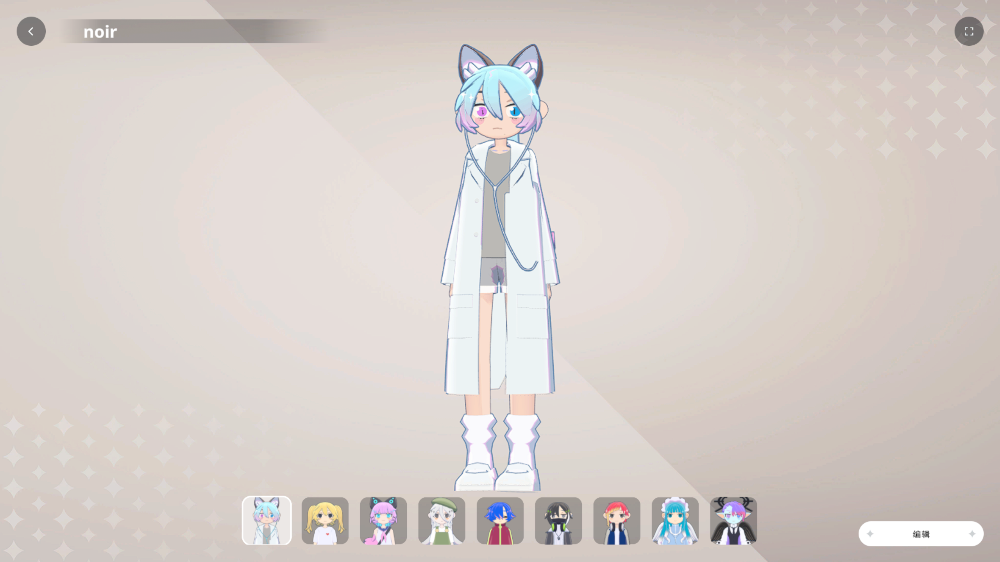
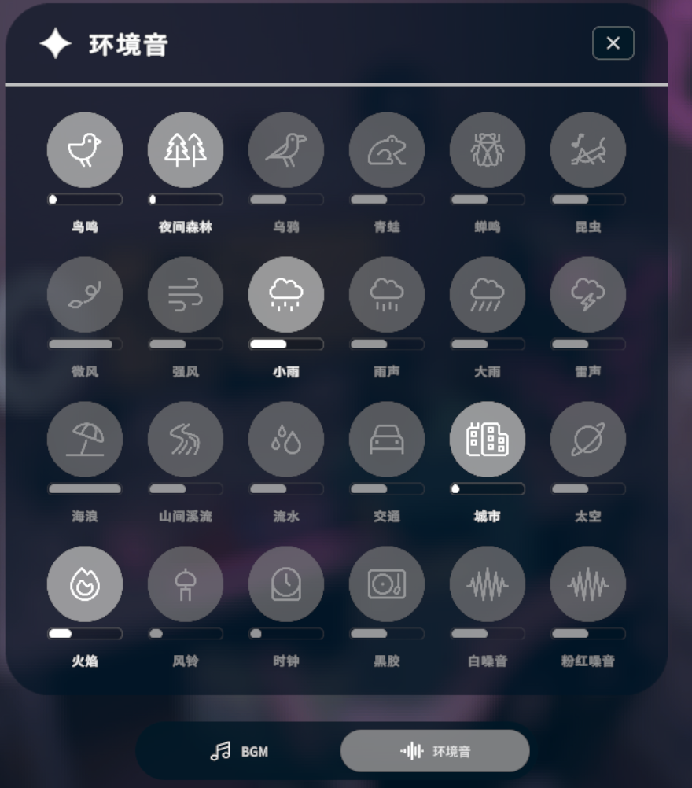

三款steam付费番茄钟软件测评
三款steam付费番茄钟软件测评
当然 我先提前叠个甲
- 纯属非专业主观评测 意为分享自己使用后的感想与推荐意图 如有不同意见请随意分享
- 不知道steam是啥的 这是正版官网 剩下的麻烦自己去了解
- 以下软件基本都要收米 steam常有特惠 本人建议打折再买 奉行网络软件不花钱主义的请自行去找出路
- 该文章编辑于2025年/10月 必定会在今后存在过时的内容 若有信息与游戏如今更新的版本不同 以游戏为准
番茄钟 一种参照番茄工作法的计时器 简单来说就是将专注工作和休息时间穿插排列 达到增加效率 减少拖延 增强动力的效果
（举例来说就是 25分钟工作-5分钟短休息-25分钟工作-5分钟短休息-25分钟工作-30分钟长休 类似的时间安排）
以下是我购买并使用过的三款以此功能为核心的软件 共通性为音乐播放器与相对游戏化的页面/功能
1.gogh:虚拟形象与专注（国区售价45 史低33.75 数据来自steamDB）
gogh:虚拟形象与专注 是一个将虚拟形象制作、房间布置和宠物养成游戏相结合的游戏化专注工具。布置你理想的房间，享受Lofi音乐和环境音效，在可爱的虚拟形象和奇妙宠物的陪伴下让你的学习和工作变得更加有趣。
该软件提供了高度自定义化的3d捏人系统 支持保存多个人物配装 甚至连角色所处的环境都能进行完全的自定义（从毛胚房到家居完备的客厅/起居室） 其中大部分照片/相框容器显示的都是默认图片 需要本地图片配置更改

人物编辑页面
实机演示
诚然 这样的系统能带来极大的自由性 可将虚拟空间调成令自己满意的状态很是费时 对于我这种没那么多心思仔细装扮的懒人来说 选个预设房间并调整贴图才是更好的选择 软件本身提供了已经放好家具的预设房间与一些什么都没有摆的空房间 剩下的都交给使用者自由发挥
再来说说重要的使用体验 首先 软件自带的曲目很多 支持在13个纯音乐专辑里切换 每个都有自己的风格 从lofi 钢琴乐到像素 宇宙风格
专辑切换/曲目演示
除开曲子作为背景音乐 软件内还有环境音（其实就是较常见的白噪音）可供选择

环境音展示
除开背景音乐 软件的核心功能——番茄钟 todolist 习惯日历 日记 都是点击即可唤出窗口 进行使用
番茄钟 todo 习惯日历
日历
该软件还有个作为核心的基础系统——养宠物（可关闭声音/关闭模型） 其实存在感不高 基本可以忽略
会有个宠物随着你对箱庭环境的编辑（处于虚拟早上/夜晚 ）/主要使用了哪个功能（番茄钟 todo 习惯）变化外形 隔一段周期生长成完全体 然后离开（留下一封因为翻译拉跨导致意义不明的信封） 随后再降临成为蛋 继续重新发育
宠物幼体
该软件是以手机版起家的 因此steam版还在更新 据说后期会有将虚拟人物匹配在一个房间中 进行联机专注的功能 拭目以待了
2.Spirit City:Lofi Sessions（国区售价40 史低24 存在付费DLC 这些一会另讲 数据来自steamDB）
Spirit City:Lofi Sessions 是一款游戏化的专注工具，配以舒缓的 Lofi 音乐。在这里，你可以发现和收集各种幻灵，自定义虚拟的休闲空间，并通过一系列简单好用的功能来提高注意力和缓解压力，为完成现实生活中的任务提供帮助。
同样是展示了3d的虚拟化内容 该软件则走上了截然不同的赛道 房间中的大部分家具已经固定 只能进行配色/材质的更换 更好上手
房间编辑展示
人物模型这块比较偏欧美风 脸型估计是我看多日式动漫风了 不是很习惯..
换装页面展示（是的这游戏还和among us有过联动）
该软件也是该有的功能都有 但番茄钟ui更酷一点
番茄钟 todo 习惯页面
日记页面
环境自定义这块相对更丰富 可以选择四个时间段/令你的人物在各种不同的地方进行活动
活动选择页面
时间段选择
然后是宠物功能 有多种不同的宠物 可以通过在游戏中进行不同的活动/达成条件后挂机指定时间解锁
宠物会在你执行不同活动时 做不同的事情 按鼠标还能互动 很可爱

我其实只中意猫猫和小幽灵 其他都不怎么戳我萌点
在音乐方面 该软件提供了大量的音乐 数量多的恐怖 还能收藏起来慢慢欣赏 点个赞
顺带一提 该软件存在两个影响内容的付费dlc 火车dlc与厨房dlc 价格都在30元左右 厨房的我没买 就来说说火车dlc的使用体验
DLC购买后会在左侧菜单栏新增地点更换功能 能够切换所在的场地
该dlc提供了能在列车外/内进行的一套人物动作 以及dlc专属的宠物（本人还没解锁 不了解）

能够切换列车所在地点/速度/颠簸程度
配置完毕后可以在科幻/木制的车厢中观赏窗外的星空 很有感觉
3.Chill Pulse 心流小筑（国区售价22 史低16.28 数据来自steamDB）
Chill Pulse心流小筑将生产力工具与宁静环境相结合。运用番茄钟和待办事项清单提升专注力，同时，从赛博朋克城市到古老风景的背景音乐增添放松氛围。
随后的这个是国人作品 展示了2d环境下的虚拟化内容
软件页面
初始的场景为里昂,法国 而后面的场景需要通过使用番茄钟功能获取代币来解锁 也能用来购买一些服装/头饰/切换宠物 进入新场景时 左下角的音乐播放器会自动添入背景相对应的bgm 游戏将自带的音乐分为了八个大类 也可以修改文件来自定义音乐
获取代币还有两种作为添头的方式 养鱼和调酒
养鱼玩法类似pvz的僵尸鱼缸 在左边用代币购买鱼苗 鱼缸里边按右键投喂鱼饵 鱼在投喂定量鱼饵后会成长 可选择直接出售或是留着让其产代币
这么多饵真不会撑死吗
调酒点击画面右方的箭头可开启页面 根据各个场景选择任意三份的三种原料 组成一份赛博饮料 可以提供暂时的经验/代币获取加成（类似经验卡的功能） 不同材料组合所得出的生效时间 经验/代币增加百分比也是不同的 可以随意尝试
接下来还有实时匿名聊天室 与信件功能（类似qq漂流瓶 可选择投递 或 阅读/回复）
吐槽
- 最好动下画质相关设置 不然占用这块会有些吓人…
引用
We are just another visitor in a transient world.